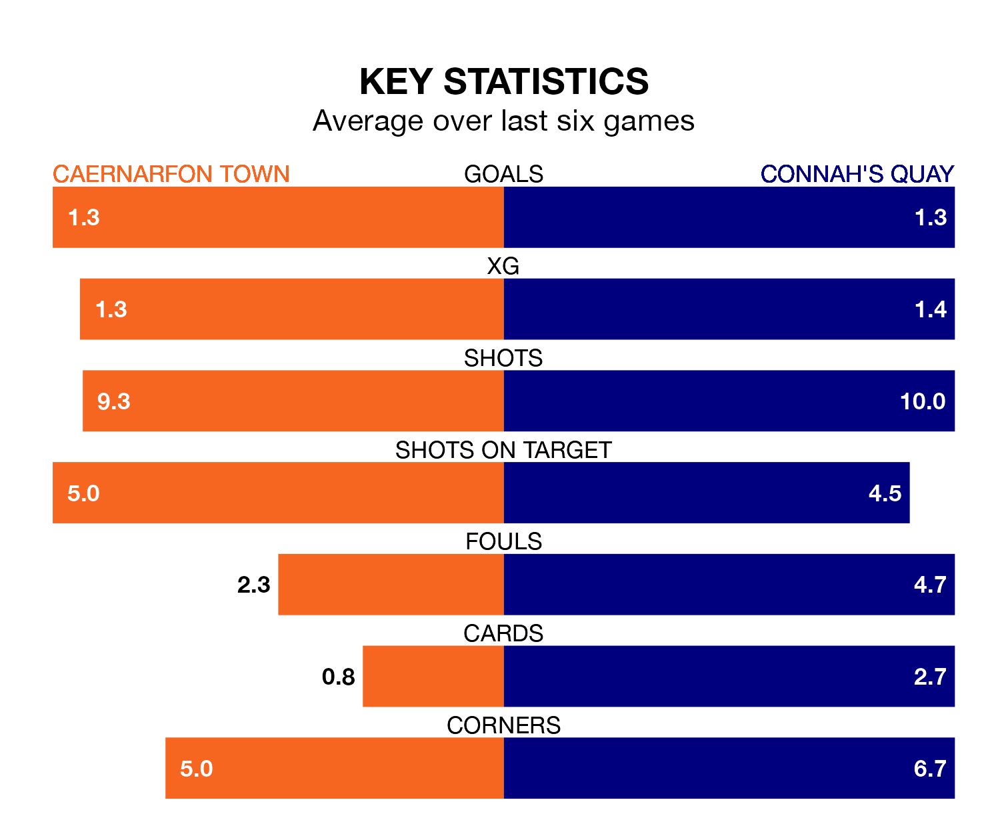

Connah's Quay travel to the Oval for Friday's late match against Caernarfon Town looking to bounce back from defeat last time out in the Welsh Premier League.
The Nomads, who sit second in the league after 27 games, fell to a 5-1 home defeat to The New Saints on March 8.
They face a Caernarfon side who secured a draw in their last match, a 1-1 tie with Bala Town, and who sit fourth in the table.
With 66 goals in 27 games so far this season, Connah's Quay are the league's second-highest scorers with 2.4 goals per game. And they are conceding fewer than average, letting in 39 goals at a rate of 1.4 per game.
Caernarfon are also above average scorers, with 1.7 goals per game, compared to a league average of 1.5. They have conceded 2.0 goals per game.
In the last 10 years, Caernarfon and Connah's Quay have played each other on 19 occasions. Caernarfon won two of them, Connah's Quay 12, and they drew five times.
On average, the Canaries scored 0.8 goals and the Nomads 2.7 in those matches.
Their last meeting was on February 2, when they played out a 1-1 draw.
Town are in mixed form in the Welsh Premier League, with one win and four draws from their last six games.
With three wins and a draw over that period, the Nomads's form is better – they have taken 10 points from 18, compared to the Canaries' seven.
Updated: 15:10 (UTC), 15/03/24